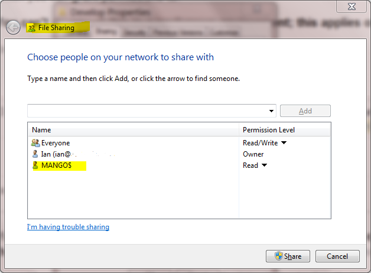

The difference between the 'Local System' account and the 'Network Service' account?
I have written a Windows service that spawns a separate process. This process creates a COM object. If the service runs under the 'Local System' account everything works fine, but if the service runs under the 'Network Service' account, the external process starts up but it fails to create the COM object. The error returned from the COM object creation is not a standard COM error (I think it's specific to the COM object being created).
So, how do I determine how the two accounts, 'Local System' and 'Network Service' differ? These built-in accounts seem very mysterious and nobody seems to know much about them.
Answer
Since there is so much confusion about functionality of standard service accounts, I'll try to give a quick run down.
First the actual accounts:
- LocalService account (preferred)
A limited service account that is very similar to Network Service and meant to run standard least-privileged services. However, unlike Network Service it accesses the network as an Anonymous user.
* Name: `NT AUTHORITY\LocalService` * the account has no password (any password information you provide is ignored) * HKCU represents the **LocalService** user account * has _minimal_ privileges on the local computer * presents _anonymous_ credentials on the network * **SID** : S-1-5-19 * has its own profile under the **HKEY_USERS** registry key (`HKEY_USERS\S-1-5-19`)
- NetworkService account
Limited service account that is meant to run standard privileged services. This account is far more limited than Local System (or even Administrator) but still has the right to access the network as the machine (see caveat above).
* `NT AUTHORITY\NetworkService` * the account has no password (any password information you provide is ignored) * HKCU represents the **NetworkService** user account * has _minimal_ privileges on the local computer * presents the computer's credentials (e.g. `MANGO$`) to remote servers * **SID** : S-1-5-20 * has its own profile under the **HKEY_USERS** registry key (`HKEY_USERS\S-1-5-20`) * If trying to schedule a task using it, enter `NETWORK SERVICE` into the _Select User or Group_ dialog
- LocalSystem account (dangerous, don't use!)
Completely trusted account, more so than the administrator account. There is nothing on a single box that this account cannot do, and it has the right to access the network as the machine (this requires Active Directory and granting the machine account permissions to something)
* Name: `.\LocalSystem` (can also use `LocalSystem` or `ComputerName\LocalSystem`) * the account has no password (any password information you provide is ignored) * **SID** : S-1-5-18 * does not have any profile of its own (`HKCU` represents the **default** user) * has _extensive_ privileges on the local computer * presents the computer's credentials (e.g. `MANGO$`) to remote servers
Above when talking about accessing the network, this refers solely to SPNEGO
(Negotiate), NTLM and Kerberos and not to any other authentication mechanism.
For example, processing running as LocalService can still access the
internet.
The general issue with running as a standard out of the box account is that if you modify any of the default permissions you're expanding the set of things everything running as that account can do. So if you grant DBO to a database, not only can your service running as Local Service or Network Service access that database but everything else running as those accounts can too. If every developer does this the computer will have a service account that has permissions to do practically anything (more specifically the superset of all of the different additional privileges granted to that account).
It is always preferable from a security perspective to run as your own service account that has precisely the permissions you need to do what your service does and nothing else. However, the cost of this approach is setting up your service account, and managing the password. It's a balancing act that each application needs to manage.
In your specific case, the issue that you are probably seeing is that the the DCOM or COM+ activation is limited to a given set of accounts. In Windows XP SP2, Windows Server 2003, and above the Activation permission was restricted significantly. You should use the Component Services MMC snapin to examine your specific COM object and see the activation permissions. If you're not accessing anything on the network as the machine account you should seriously consider using Local Service (not Local System which is basically the operating system).
In Windows Server 2003 you cannot run a scheduled task as
-
NT_AUTHORITY\LocalService(aka the Local Service account), or -
NT AUTHORITY\NetworkService(aka the Network Service account).
That capability only was added with Task Scheduler 2.0, which only exists in Windows Vista/Windows Server 2008 and newer.
A service running as NetworkService presents the machine credentials on the
network. This means that if your computer was called mango, it would present
as the machine account MANGO$:
